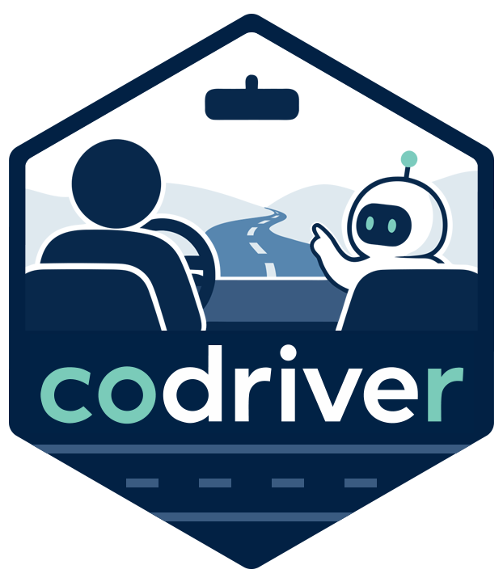

Getting started
Source:vignettes/getting-started-with-codriver.Rmd
getting-started-with-codriver.RmdTo use codriver you need access to a large language model (LLM) provider — a cloud service like OpenAI or Anthropic, a model running on your own machine, or a proxy provided by your organisation. Codriver supports a wide range of providers by building on the ellmer package. This article explains how to connect codriver to your provider. It assumes you already have access to one — meaning you have signed up, obtained an API key, or been given credentials by your organisation.
Quick start
If you have an API key set and know your provider, this is all you need:
# OpenAI
codriver::codriver_configure("openai", model = "gpt-5.1")
# Anthropic Claude
codriver::codriver_configure("anthropic", model = "claude-sonnet-4-5")
# OpenAI-compatible endpoint
codriver::codriver_configure("openai_compatible",
base_url = "https://llmproxy.example.com/v1",
model = "gpt-4.1"
)Any provider and argument supported by ellmer works. Read on if you need help with provider naming, authentication, or provider-specific notes.
Providers
Codriver does not communicate with LLM providers directly. Instead, it relies on ellmer, a package that provides a unified interface to a wide range of providers. Ellmer supports many popular services — OpenAI, Anthropic Claude, Google Gemini, Mistral, Ollama, and more — and handles the details of authentication and communication for each one.
When you call codriver::codriver_configure(), you tell
codriver which provider to use by passing its name — a
short string like "openai" or "anthropic". Any
argument accepted by the corresponding ellmer constructors can be passed
directly through codriver_configure().
| Provider | name |
Environment variable |
|---|---|---|
| OpenAI | "openai" |
OPENAI_API_KEY |
| Anthropic | "anthropic" |
ANTHROPIC_API_KEY |
| Google Gemini | "google_gemini" |
GEMINI_API_KEY |
| Azure OpenAI | "azure_openai" |
AZURE_OPENAI_API_KEY |
| AWS Bedrock | "aws_bedrock" |
(IAM credentials) |
| Databricks | "databricks" |
DATABRICKS_TOKEN |
| Snowflake | "snowflake" |
SNOWFLAKE_TOKEN |
| Groq | "groq" |
GROQ_API_KEY |
| Mistral | "mistral" |
MISTRAL_API_KEY |
| Perplexity | "perplexity" |
PERPLEXITY_API_KEY |
| OpenRouter | "openrouter" |
OPENROUTER_API_KEY |
| Ollama (local) | "ollama" |
(none required) |
| LM Studio (local) | "lmstudio" |
(none required) |
| OpenAI-compatible | "openai_compatible" |
OPENAI_API_KEY |
The table covers providers commonly used. Ellmer supports additional providers - see the ellmer homepage for the full and current list.
Most providers require a model to be specified, but
ellmer will select a default for most providers. If a default is used,
ellmer will print it to the console on every codriver call. Specifying
the model explicitly in codriver_configure() avoids
this.
Authenticating
Before codriver can send requests to an LLM, it needs to prove to the provider that you are authorised to use it. How this works depends on the provider.
The most common approach is an API key: a secret string that you obtain from your provider’s website and store on your machine. Ellmer looks for these keys in environment variables — named slots in your R session that hold configuration values. Each provider expects its key in a specific variable.
The table above lists the environment variable names of commonly used
providers. If your provider is not in the table or uses a different
authentication mechanism, look at the help page for the corresponding
ellmer constructor. For example, running
?ellmer::chat_openai in R will tell you that OpenAI expects
OPENAI_API_KEY and ?ellmer::chat_aws_bedrock
tells you about their specific authentication mechanism.
The recommended way to set an environment variable permanently is to
add it to your .Renviron file, which R reads automatically
at startup. The example below shows how this is done.
OpenAI
OpenAI is the provider codriver has been most thoroughly tested with. GPT-4.1 and GPT-5.1 both produce clean, reliable completions in the RStudio workflow codriver is designed for.
To get started, go to platform.openai.com, sign in, and create an API key under API keys.
Then store it in your .Renviron:
file.edit("~/.Renviron")Add:
OPENAI_API_KEY=your_key_hereSave the file, restart R and then configure codriver:
codriver::codriver_configure("openai", model = "gpt-5.1")That is all that is needed. You’re now ready to start using codriver in your RStudio workflow.
OpenAI-compatible endpoint
Many organisations run their own LLM infrastructure that speaks the
OpenAI API format. This includes local model servers, research clusters,
and company proxies. For these, use "openai_compatible" as
the provider name.
Unlike named providers, an OpenAI-compatible endpoint has no defaults. You will need to know the base URL and model name from your organisation’s documentation or administrator.
By default, "openai_compatible" reads the API key from
the environment variable OPENAI_API_KEY. If you want to
keep it separate from an actual OpenAI key, save a different key under a
custom environment variable name and pass it explicitly:
codriver::codriver_configure(
"openai_compatible",
base_url = "https://llmproxy.example.com/v1",
model = "gpt-5.1",
credentials = function() Sys.getenv("CUSTOM_API_KEY")
)Note: older ellmer documentation may show an
api_keyargument - this is deprecated in favour ofcredentialsin combination with an environment variable, which avoids hardcoding keys in your code.
Provider notes
Some notes on experience with providers:
OpenAI is the provider codriver has been most thoroughly tested with. GPT-4.1 and GPT-5.1 both produce clean, reliable completions in the RStudio workflow codriver is designed for.
Anthropic Claude models have also been tested quite extensively. Especially Claude Sonnet 4.5 has been confirmed to work well with codriver.
-
Google Gemini produces good results too. When using free tier be aware that some models are very slow and only allow for a few requests per day. Gemini 3.1 Flash Lite has been proven to be quick and works well with codriver.
The Gemini Flash 2.5 (non-lite) series models use an internal reasoning process that can occasionally cause thought text to appear in completions. If you encounter this, try passing
api_argsto suppress thought output in the response:codriver::codriver_configure( "google_gemini", model = "gemini-2.5-flash", api_args = list( generationConfig = list( thinkingConfig = list(includeThoughts = FALSE) ) ) )
Next: Using codriver